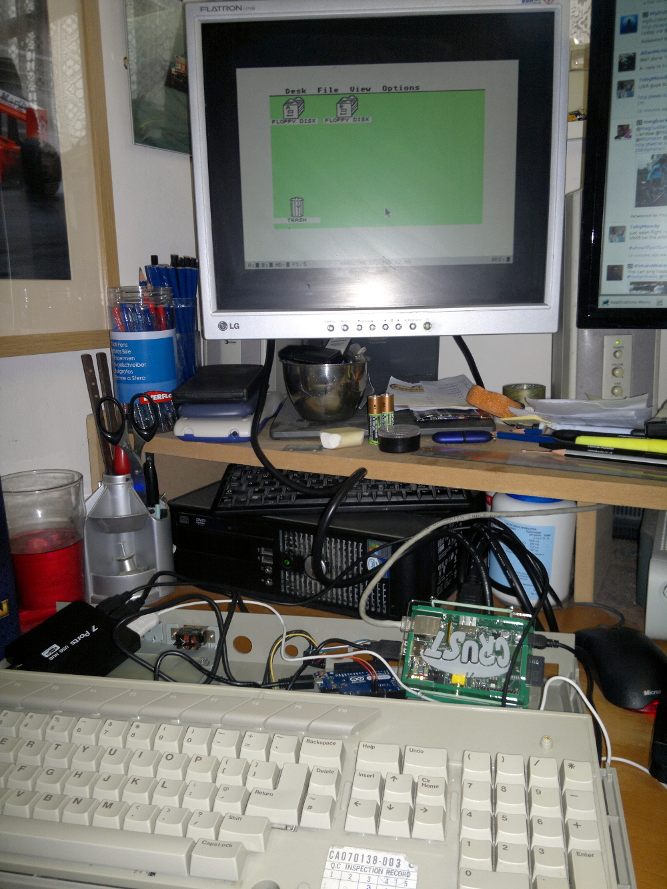

Atari Pi Project: Components | Arduino Wiring | Arduino Coding | Pi Mounting | Pi Software | Final Assembly
Atari PI Project
My first computers were from Atari, initially a 400 with the membrane keyboard (ugh!) and then an 800XL and finally an ST. I still enjoy messing around with Atari kit and having seen someone building a Raspberry Pi into a Sinclair Spectrum case I thought I would do something similar and build a Raspberry Pi into an Atari ST case to use with an ST emulator:
- Components used.
- Arduino keyboard wiring.
- Arduino coding.
- Mounting the Raspberry Pi.
- Pi software.
- Final assembly.
I have since updated this project here to use a Raspberry Pi 3.

Return to home page.